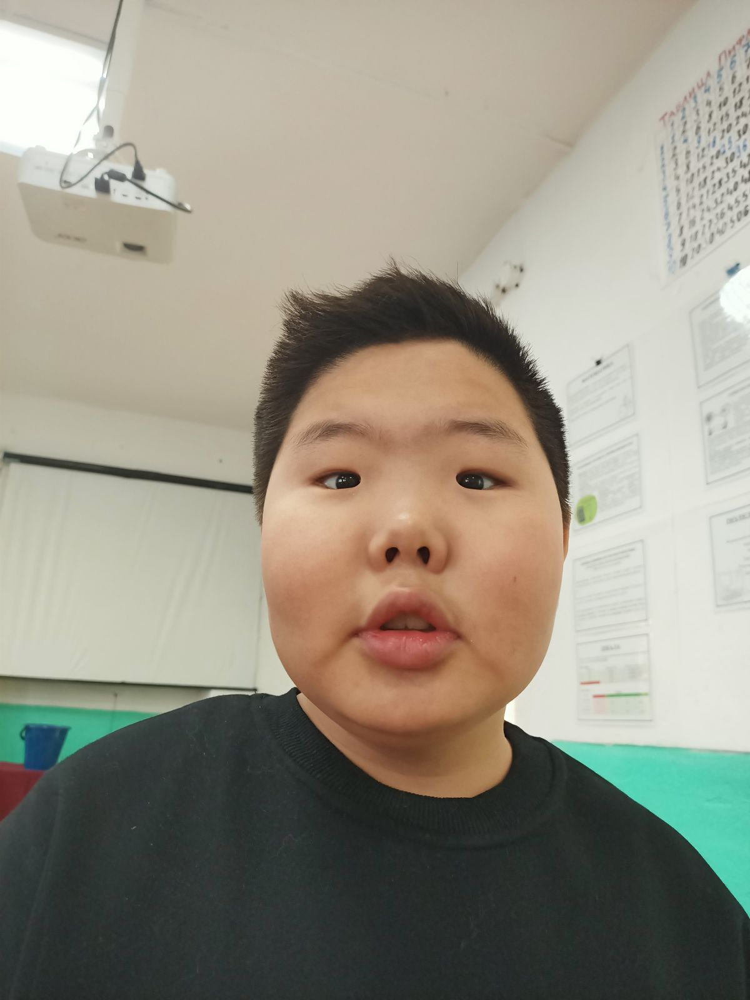
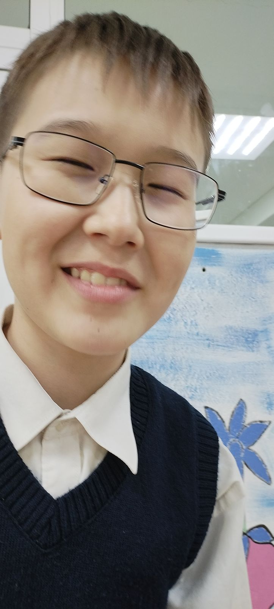
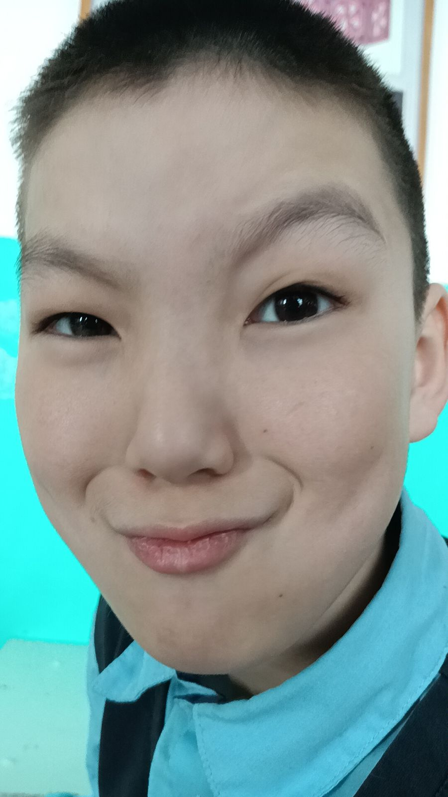
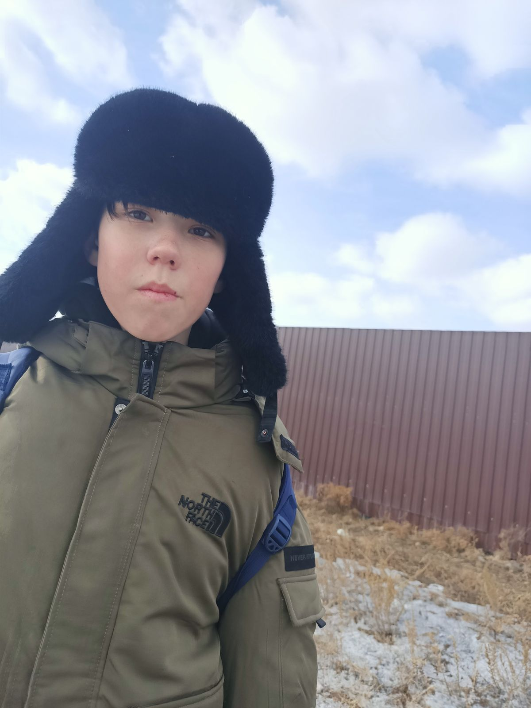
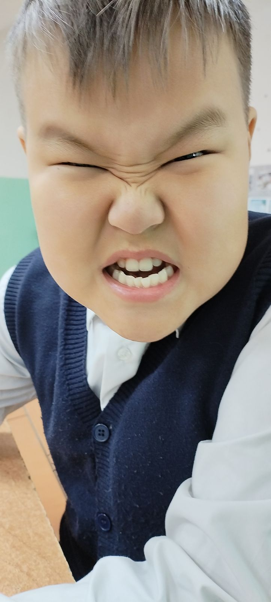
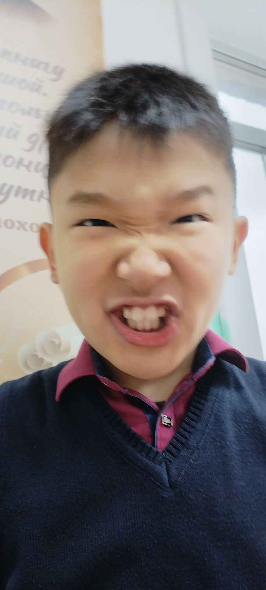

Спец-приёмыАртём
Он умеет отлично рыгать и пердеть. Помог отравить Арину.
Открыть досьеПять дел, которые лучше не открывать. Нажми на карточку — и узнаешь почему.

Спец-приёмыОн умеет отлично рыгать и пердеть. Помог отравить Арину.
Открыть досье
НаблюдательСлава высокий, не участвует в битвах. Предпочитает сохранять стратегический нейтралитет.
Открыть досье
ВетеранБыстрый флеш, участвовал в нескольких битвах. (Мини-игра внутри)
Открыть досье
ТяжеловесМедленный и высокий, имеет закрытый фотоархив.
Открыть досье
СборщикВсегда зовёт гулять. Умеет собирать Портал Хаоса — нажми, чтобы увидеть.
Открыть досье
ШтурмовикАтаковал полицейские участки и т.д. Он за них.
Этап 1: Введи правильный порядок жертвоприношения.
(Подсказка: Сначала смотришь, потом режешь, потом остается лишь прах)
Этап 2: Кто предпочитает сохранять стратегический нейтралитет?
Этап 3: ПОЙМАЙ ЯДРО ВОССТАНОВЛЕНИЯ!
5.00

 DOOM
DOOM
ВЫБРАТЬСЯ НЕВОЗМОЖНО.
Арина передает привет. Включите вентиляцию! (Кликай по 2 раза на каждую)
Санжи зовёт из-за двери. Что сделать?
Выбирай!
Осталось: 3 сек.
«Уйди отсюда, либо будет бой»
> Кого вызвать на помощь?